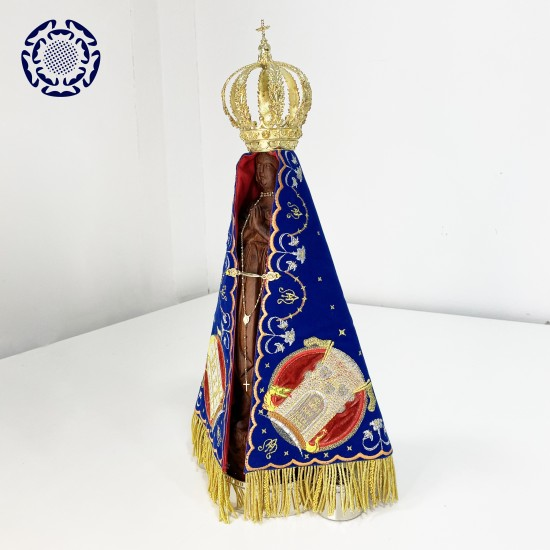

Nossa Senhora da Conceição Aparecida
1. Identificação da obra
Santo / Mistério / Título: Nossa Senhora da Conceição Aparecida
Título devocional: Padroeira do Brasil
Tipo de peça: Escultura (réplica fiel)
Autor / oficina: Oficina devocional da cidade de Aparecida
Escola / estilo: Barroco luso-brasileiro
Modelo original: Século XVIII (1717)
Técnica e materiais: Resina, capa têxtil bordada, coroa metálica destacável
Dimensão: 20 cm de altura
Origem / procedência: Adquirida em loja devocional na cidade de Aparecida (SP)
Observação: Réplica fiel do estado atual da imagem original após a restauração de 1978, com capa e coroa separadas, conforme o modelo histórico consolidado. Ainda quero substituir a capa, a coroa e o fecho da capa por modelos mais fieis ao original.
2. Leitura iconográfica
2.1 Elementos principais
Figura central: Virgem Maria sob o título da Imaculada Conceição, mãos postas em oração.
Expressão e atitude: Serenidade recolhida e majestade materna.
Gestos das mãos: Intercessão contínua e conformidade perfeita à vontade divina.
Direção do olhar: Inclinado discretamente, acolhendo o fiel e apontando ao mistério de Deus.
2.2 Vestes e cores
Cores dominantes: Azul-escuro e dourado.
Sentido simbólico:
- Azul — pureza, transcendência e realeza espiritual.
- Dourado — glória celeste e dignidade régia da Mãe de Deus.
- Tonalidade escurecida — efeito das águas do rio e da ação do tempo.
2.3 Símbolos e atributos
- Lua sob os pés: Referência a Ap 12,1.
- Coroa: Reconhecimento da realeza de Maria.
- Capa imperial: Consagração do Brasil à Virgem.
2.4 Elementos secundários
Contexto tradicional: Rio Paraíba do Sul.
Detalhe marcante: A imagem original foi encontrada em duas partes (corpo e cabeça), posteriormente reunidas.
3. Contexto histórico e devocional
Em 1717, nas águas do Rio Paraíba do Sul, nas proximidades do Porto de Itaguaçu, os pescadores Domingos Garcia, João Alves e Felipe Pedroso lançavam suas redes por ocasião da passagem de Dom Pedro de Almeida e Portugal, Conde de Assumar, governador da Capitania de São Paulo e Minas do Ouro. Desejando oferecer-lhe peixes como demonstração de respeito e hospitalidade, tentaram pescar sem êxito. Em uma das investidas, retiraram do fundo do rio o corpo de uma pequena imagem de Nossa Senhora da Conceição; lançando novamente a rede, trouxeram a cabeça. Reunidas as duas partes, voltaram à pesca — e esta se tornou extraordinariamente abundante, fato que marcou o início da devoção àquela imagem que passaria a ser chamada Aparecida.
A pequena escultura de terracota, moldada segundo o modelo barroco da Imaculada Conceição, apresentava traços próprios da tradição portuguesa, como era comum nas representações marianas do período colonial. Contudo, ao ser retirada das águas, sua tonalidade encontrava-se escurecida pelo lodo e pela ação do tempo. Com o passar dos anos, essa coloração tornou-se característica marcante da imagem, sendo acolhida pelo povo como sinal providencial. A Virgem que surgia das águas apresentava-se com aparência escura, o que foi percebido por muitos como expressão concreta da universalidade da maternidade de Maria. Num Brasil onde conviviam europeus, povos indígenas e povos negros trazidos como escravos, a imagem de tonalidade escura tornava-se silencioso testemunho de que, diante de Deus, todos possuem igual dignidade de criaturas e filhos chamados à redenção. A Mãe que se deixa encontrar nas águas não pertence a uma etnia ou classe, mas estende seu manto sobre todos.
Com o passar dos anos, a pequena imagem tornou-se centro de crescente veneração nacional. Sofreu os efeitos naturais do tempo e, em 1978, foi alvo de violento atentado que a reduziu a numerosos fragmentos. A restauração, conduzida com rigor técnico e profundo respeito à sua integridade histórica e religiosa, recompôs cuidadosamente cada parte, preservando a continuidade do culto e a autenticidade material da escultura.
A coroa e o manto que hoje a adornam possuem vínculo direto com a Casa Imperial do Brasil. A Princesa Imperial Princesa Isabel, mulher de sincera e conhecida devoção mariana, atribuiu à intercessão de Nossa Senhora Aparecida a graça da maternidade após anos de expectativa. Em reconhecimento, ofereceu-lhe uma coroa de ouro e um manto azul ricamente bordado, gesto que expressava publicamente a submissão da dignidade imperial à realeza espiritual de Maria.
Essa mesma devoção se manifesta de modo eloquente no episódio da Abolição da Escravatura. Em 13 de maio de 1888, exercendo a Regência do Império, a Princesa Isabel sancionou a Lei Áurea, extinguindo juridicamente a escravidão no Brasil. Sabia que tal decisão contrariava interesses poderosos e poderia comprometer a estabilidade política da Monarquia. Ainda assim, movida por convicção moral e consciência cristã, preferiu cumprir o que entendia como exigência da lei divina e da justiça natural. A tradição devocional brasileira conserva a compreensão de que Isabel confiou o destino do Trono à proteção de Nossa Senhora Aparecida, reconhecendo que todo poder temporal se submete à soberania de Cristo e à intercessão de Sua Mãe Santíssima.
Quando, no ano seguinte, a Monarquia foi derrubada, muitos viram nesse desfecho não uma derrota espiritual, mas um sacrifício histórico oferecido sob o manto da Virgem. Assim, Nossa Senhora Aparecida permanece não apenas como sinal da piedade simples que brotou das águas do Paraíba, mas também como testemunho da íntima ligação entre fé católica, consciência moral e destino do Brasil Imperial.
Em 16 de julho de 1930, o Papa Pio XI proclamou oficialmente Nossa Senhora Aparecida Padroeira do Brasil, confirmando solenemente aquilo que já vivia no coração da Nação: que sob o manto da Imaculada Conceição Aparecida o Brasil encontra identidade, consolo e esperança.
Festa litúrgica: 12 de outubro
Virtudes em destaque: Humildade, pureza, confiança filial, intercessão materna
Motivo da presença no oratório: Recordação da identidade católica do Brasil e da proteção materna sobre esta casa. Recorda a profunda devoção de minha avó
a Virgem de Aparecida.
4. Sentido espiritual
Ideia central: Deus manifesta sua grandeza por meio do que é pequeno e oculto.
Aplicação prática: Confiar na Providência mesmo quando as redes parecem vazias.
Advertência e consolação: Corrige a impaciência e consola nas escassezes.
5. Escritura e Tradição
5.1 Sagrada Escritura (Ave Maria)
Lucas 1,48
“Porque olhou para a humildade de sua serva; eis que desde agora me chamarão bem-aventurada todas as gerações.”
Apocalipse 12,1
“Apareceu no céu um grande sinal: uma mulher revestida do sol, com a lua debaixo dos pés e na cabeça uma coroa de doze estrelas.”
5.2 Milagres antigos atribuídos à imagem
Pesca abundante (1717) — Milagre fundador da devoção.
O chamado milagre da pesca abundante, ocorrido em 1717, constitui o primeiro e mais fundamental sinal associado à imagem de Nossa Senhora da Conceição Aparecida, sendo considerado o marco inicial da devoção.
Naquele ano, os pescadores Domingos Garcia, João Alves e Felipe Pedroso receberam a incumbência de prover peixes para o banquete que seria oferecido por ocasião da passagem de Dom Pedro de Almeida e Portugal, Conde de Assumar, então governador da Capitania de São Paulo e Minas do Ouro. A pesca, contudo, encontrava-se escassa. Lançavam as redes repetidas vezes no Rio Paraíba do Sul e nada recolhiam. A situação tornava-se constrangedora e preocupante, pois a hospitalidade era virtude levada a sério no contexto colonial.
Em uma das tentativas, ao puxarem a rede, encontraram apenas o corpo de uma pequena imagem de terracota representando Nossa Senhora da Conceição, sem a cabeça. O achado, por si, já era inesperado, mas não resolvia a necessidade prática que os movia. Lançaram novamente a rede no mesmo local e, desta vez, recolheram a cabeça da imagem. Uniram cuidadosamente as duas partes no barco.
Segundo a tradição preservada pelos próprios pescadores e transmitida ao longo das gerações, após reunirem a imagem e a colocarem na embarcação, lançaram novamente as redes. A partir desse momento, a pesca tornou-se extraordinariamente abundante. As redes, antes vazias, passaram a vir tão cheias que ameaçavam romper-se pelo peso dos peixes. O resultado superou não apenas o necessário para a ocasião, mas toda expectativa ordinária.
O caráter do milagre, tal como compreendido no contexto da época, não reside apenas na abundância em si, mas na mudança imediata e proporcional ao gesto de recolher e reunir a imagem. A sequência — esterilidade da pesca, encontro do corpo, encontro da cabeça, reunião das partes e abundância subsequente — foi interpretada como sinal de intercessão da Virgem Santíssima.
Importa notar que esse primeiro prodígio não se dá em ambiente de espetáculo ou de aparato público, mas na simplicidade de três homens do povo, em meio ao trabalho cotidiano. A devoção nasce, portanto, da experiência concreta de homens simples que testemunham uma intervenção providencial ligada à imagem recém-encontrada.
A partir desse episódio, a pequena escultura passou a ser guardada com veneração na casa de um dos pescadores, onde começaram a ocorrer outras graças atribuídas à intercessão de Nossa Senhora. Assim, a pesca abundante de 1717 não foi apenas um evento isolado, mas o ponto inaugural de uma história de devoção que se expandiria até tornar Nossa Senhora Aparecida a Padroeira do Brasil.
Libertação do escravo Zacarias (século XVIII) — Correntes teriam se rompido ao tocar a imagem.
O episódio conhecido como a libertação do escravo Zacarias é um dos relatos antigos mais difundidos na tradição devocional ligada a Nossa Senhora Aparecida, remontando ao século XVIII, quando a imagem já era objeto de veneração crescente na região.
Segundo a tradição, um homem chamado Zacarias, conduzido em condição de escravo e com pesadas correntes nos pulsos e tornozelos, teria passado pela capela onde a imagem se encontrava exposta à devoção dos fiéis. Movido por fé — ou ao menos por esperança — pediu permissão para aproximar-se da imagem e rezar diante dela. Seu pedido foi inicialmente recebido com desconfiança, dada sua condição e o contexto social da época.
Concedida a aproximação, Zacarias ajoelhou-se diante da imagem de Nossa Senhora da Conceição Aparecida e, ao tocar ou aproximar-se da imagem, as correntes que o prendiam teriam se rompido subitamente, caindo ao chão. O fato foi interpretado como intervenção milagrosa, sinal de que a Mãe de Deus atendia ao clamor daquele homem.
O significado atribuído ao acontecimento ultrapassava o aspecto físico do rompimento das correntes. Para os devotos, tratava-se de sinal espiritual eloquente: Maria, Mãe de todos, não distingue seus filhos pela condição social. A libertação material tornava-se imagem visível da libertação interior que Cristo oferece a todos os homens.
É importante notar que o relato não surge em contexto de agitação política ou discurso ideológico, mas no ambiente próprio da religiosidade popular do século XVIII, onde os milagres eram compreendidos como manifestações concretas da Providência. A narrativa foi transmitida oralmente e consolidada na tradição local, tornando-se um dos primeiros sinais associados à proteção da Virgem Aparecida sobre os mais humildes.
Assim, o milagre atribuído à libertação de Zacarias foi incorporado à memória devocional como expressão da misericórdia mariana e como símbolo de que, diante de Deus, a dignidade humana não é anulada por circunstâncias temporais. Sob o manto da Imaculada Conceição Aparecida, o escravo e o senhor são igualmente criaturas chamadas à salvação.
O milagre da cura da menina cega
Uma menininha nasceu cega em Jaboticabal-SP. A família era grande devota de Nossa Senhora de Aparecida. Por isso o sonho dela era ir a Aparecida para tocar a imagem. Com muito esforço, a família conseguiu viabilizar essa viagem. Chegando na Igreja, logo nas escadarias, a menina voltou a enxergar e exclamou para sua mãe: “Como é linda esta Igreja!”.
O Cavaleiro Incrédulo
Um cavaleiro estava indo de Cuiabá para Minas Gerais e passou pelo Santuário de Aparecida. Ao ver os romeiros, começou a zombar da fé alheia, pois ele não acreditava em Nossa Senhora. Ao tentar invadir a Igreja com seu cavalo, a pata do animal prendeu na escada e o cavaleiro caiu no chão. A ferradura do cavalo ficou cravada na escada. A partir daí, o homem se converteu e começou a rezar pela Santa, pedindo perdão pelos seus atos.
6. Oração
Ó Maria Santíssima, Mãe Imaculada e Padroeira do Brasil,
que surgistes das águas para consolar um povo simples,
alcançai-nos fé firme, esperança perseverante
e coração dócil à vontade de Deus.
Guardai esta casa sob o vosso manto. Amém.
7. Nota aos visitantes
Convite: Confie à Mãe de Deus suas necessidades mais simples e mais urgentes.
Sugestão de devoção: Rezar uma dezena do Rosário pelo Brasil e pelas famílias.
8. Referências Externas
- Documentação histórica da devoção em Aparecida.
- Registros da restauração de 1978.
- História da oferta da coroa e do manto imperial.
